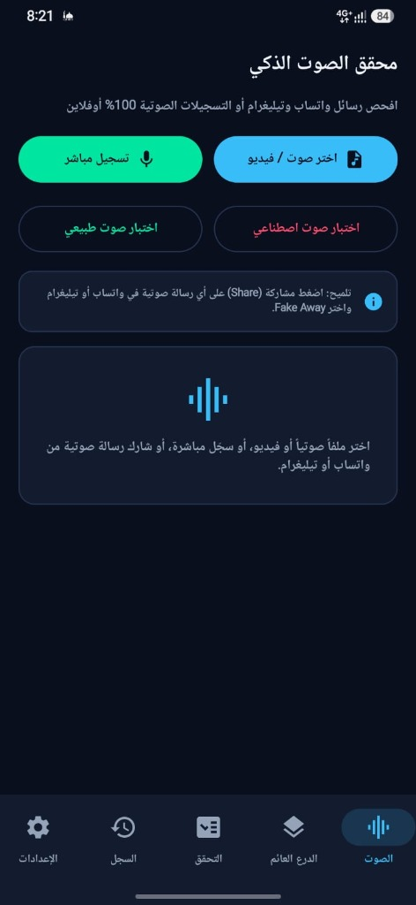
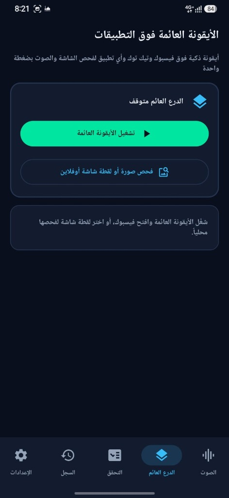
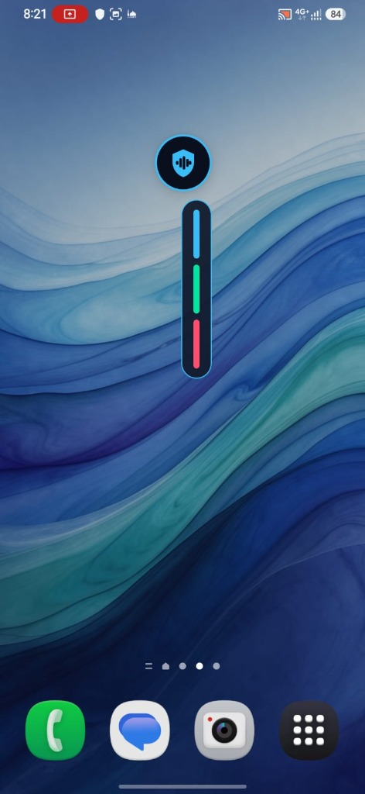
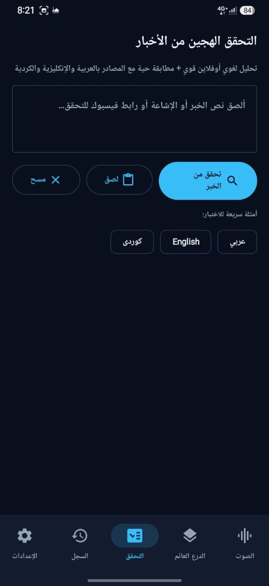
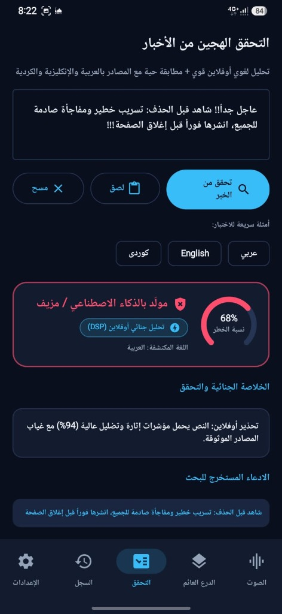
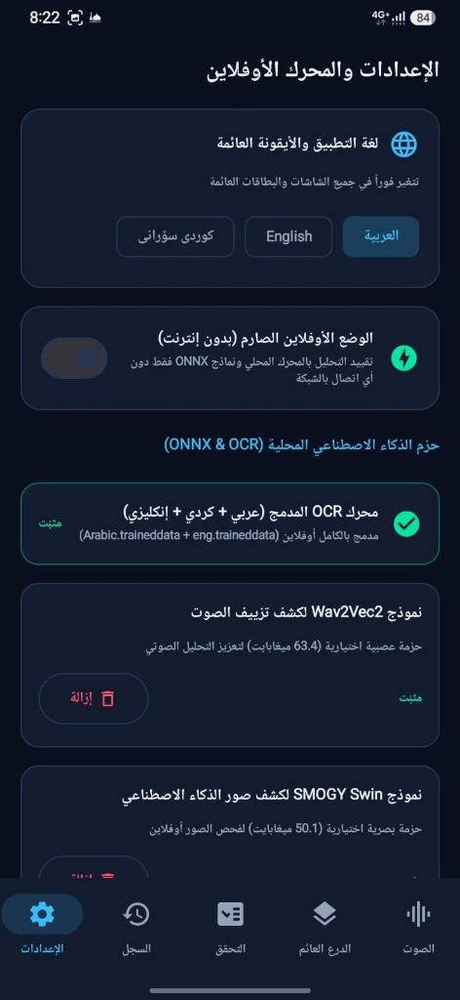

محقق الصوت الذكي
- تحليل طيفي وفيزيائي (FFT) لـ 5 بصمات صوتية تكشف استنساخ الصوت.
- دعم نموذج Wav2Vec2 ONNX محلياً على الهاتف.
- خريطة زمنية تلوّن الثواني المزيفة بالأحمر والطبيعية بالأخضر.
- استقبال مباشر عبر زر مشاركة (Share) من واتساب وتيليغرام.
تطبيق أندرويد أصيل يحمي خصوصيتك ويفحص الرسائل الصوتية في واتساب وتيليغرام، ويلتقط منشورات فيسبوك وتيك توك عبر أيقونة عائمة ذكية بضغطة زر — مع دعم كامل للعربية والإنكليزية والكردية السورانية.
شاهد كيف يعمل تطبيق Fake Away عملياً في كشف فبركة الصوت والصور والأخبار بدون إنترنت
مصمم ليعمل بكفاءة عالية على الهاتف دون رفع ملفاتك الحساسة إلى السحابة
اضغط على أي صورة لتكبيرها ومعاينة التفاصيل






ملف APK رسمي وموقّع لنظام أندرويد (8.0 فما فوق) — يعمل مباشرة أوفلاين بعد التثبيت.
تنزيل FakeAway-v1.0.0.apk (76.1 MB)تم تطوير هذا المشروع بواسطة فريق Blue Team في حاضنة الابتكار والتكنولوجيا: Mosul Space – Innovation Hub that promote Business and Technology ↗